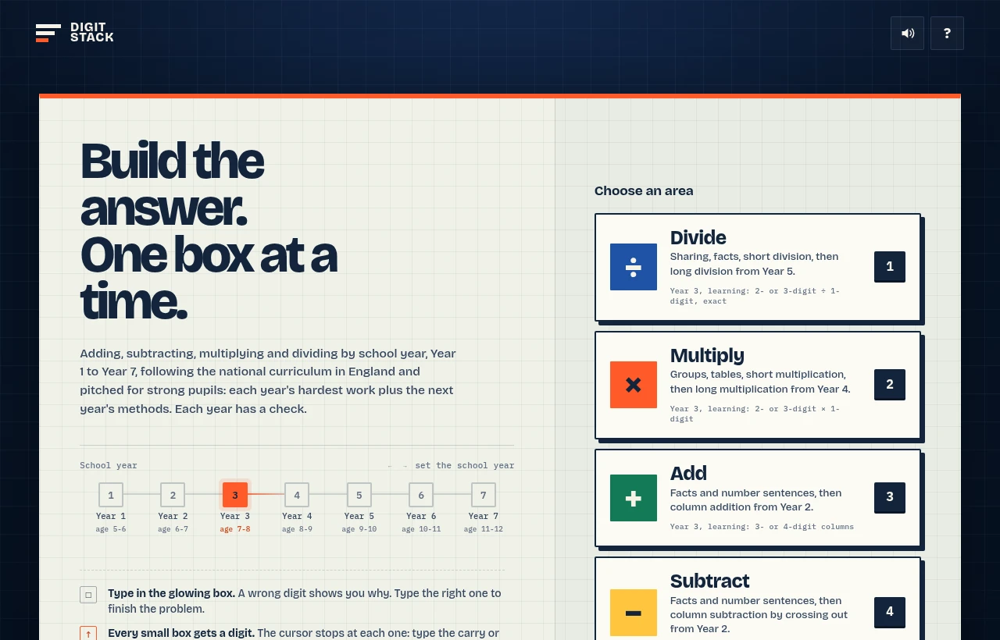
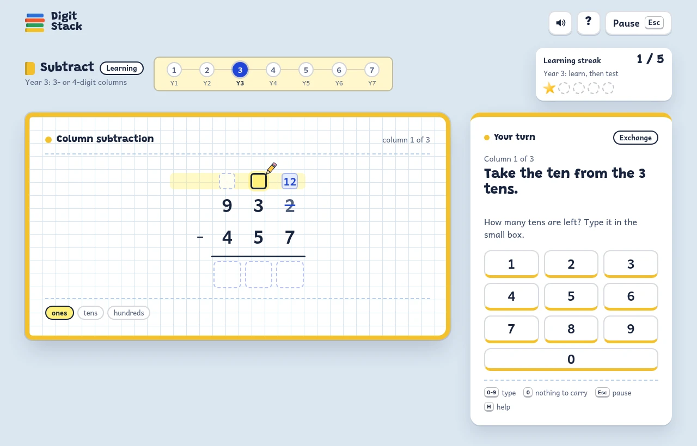

For students
How to play Digit Stack
You build each answer one box at a time, the way you would write it on paper. All you need is the keyboard.
Play Digit Stack1. Pick your year and a sum
Press ← and → to choose your school year. Then press a number to choose what to practise: 1 divide, 2 multiply, 3 add or 4 subtract.
Each one moves up on its own. You could be on Year 5 for adding and still on Year 4 for dividing. Each one shows its year and whether you are learning or being tested.

2. Type in the glowing box
The box with the orange TYPE flag is your box. Read what it says next to the sheet, work it out, then type one digit. The next box lights up by itself.
Written sums fill from the right, starting with the ones, just like on paper.

3. Small boxes: a number or 0
Small boxes are for the little numbers you write while you work: a carry when you add or multiply, or what is left over in short division.
The game stops at every small box, even when there is nothing to write there. So you always have to think: is there a carry? Type it, or type 0 if there is none. A 0 is not written on the sheet. The box just turns grey to show you checked it.

4. Taking away: exchange a ten
When you subtract, look at each column. If the top digit is smaller than the one under it, type 1 in its small box to exchange a ten. The box shows the new number, like 12, and the old digit is crossed out.
Then the game asks how many are left in the column you took the ten from. If the top digit is big enough, type 0 instead.

5. Got one wrong? Fix it
If you type a wrong digit, the box turns red. The game tells you why and shows the digit the box needs. Type the right one to keep going and finish the sum.

6. Clean rounds
A clean round is a sum with no mistakes. Your count of clean rounds in a row is at the top right. A mistake sends it back to 0, so take your time.
Get enough clean rounds in a row and you have finished learning that year. How many depends on how long the sums are: 10 for short ones, 5 for medium ones and 3 for long multiplication and long division.

7. The test
In the test, every box is open and there are no hints. You choose where to go:
- Move with the arrow keys. Tab goes to the next box in the order you would work.
- Type to fill a box. Backspace clears it.
- Use the small boxes for your working if you want. Only the answer is marked.
- Press Enter to hand in. If you left an answer box empty, the game asks once more first.

If an answer is wrong, the game marks your boxes and shows the right answer with all the working. Have a look at it, then press Enter for the next sum. Your count goes back to 0.

8. Passing the year
Get enough clean tests in a row and you pass the year. Then the next year starts, with learning first.

9. Answers below zero
From Year 5, some adding and subtracting answers are below zero. These answers start with a sign box. Press − if the answer is below zero. If it is not, type the first digit as usual.

10. Taking a break
Press Esc to pause. You can also close the game whenever you like. When you open it again, you are back at the same box with the same count.
A mistake you made before closing still counts, so closing the game does not wipe it out.

On a tablet or phone you can tap the number keys on the screen instead.

11. All the keys
| Key | What it does |
|---|---|
| ← → | Pick your school year (on the start screen) |
| 1 2 3 4 | Divide, multiply, add, subtract (on the start screen) |
| 0 to 9 | Type a digit |
| 0 | Nothing to carry, exchange or leave over, in a small box |
| − | The answer is below zero |
| Enter | Go on to the next sum, or hand in a test. After a sum with a fix, Enter tries the same sum again. |
| N | A new sum instead, after one with a fix |
| Arrows, Tab | Move between boxes in a test |
| Backspace | Clear a box in a test |
| Esc | Pause |
| Q | Quit to the start screen (when paused) |
| H | Help |
| S | Sound on or off |